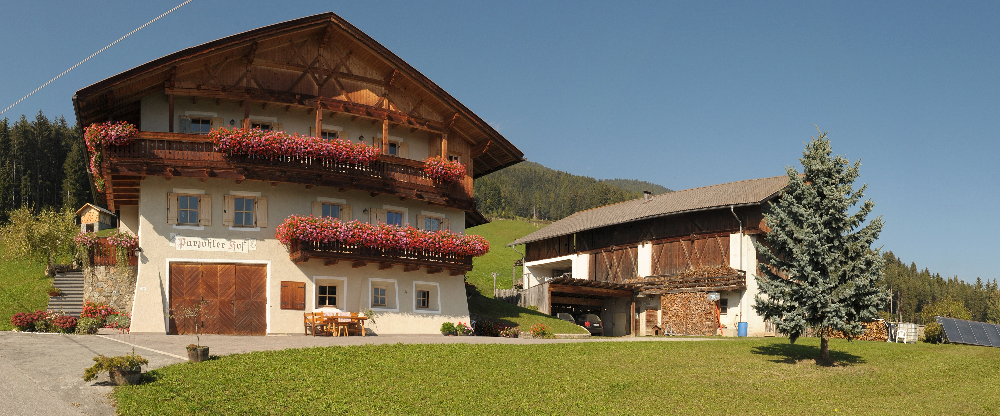
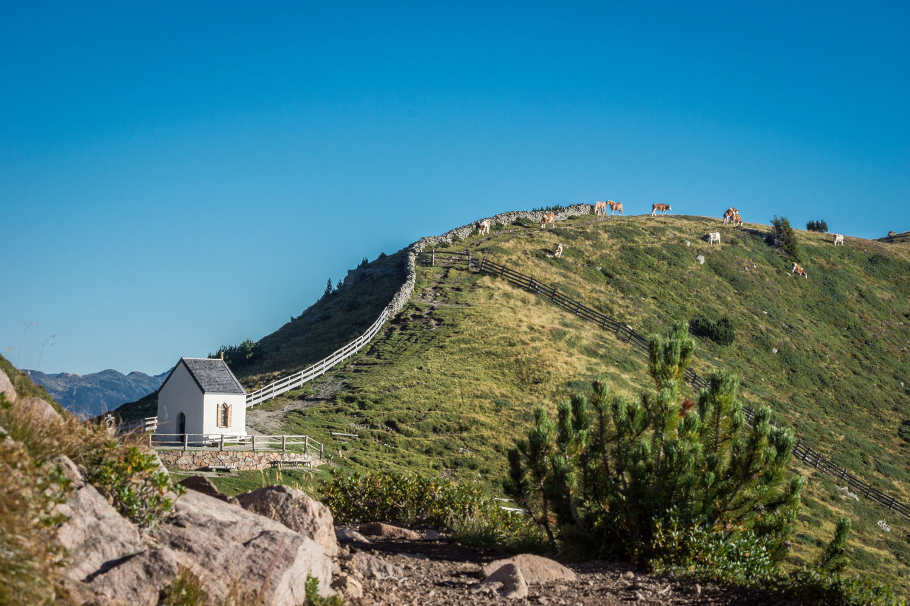

Vacanze nella fattoria a Villandro
La Vostra destinazione è il maso di Parjoehler situato a 1370 m.s.l.m. appartenente alla famiglia Fink. Il maso, che è infuso dalla tradizione contadina alto atesina, è circondato da campi e foreste intaccate e si presta ad una vacanza a piena immersione nella natura. La località è il luogo ideale per sfuggire al ritmo frenetico tipico della città, e per tornare ad apprezzare le cose semplici della vita. Con noi Vi aspetta un’esperienza nella tradizionale vita contadina con tanto di animali domestici e prodotti genuini della terra. Noi, Hubert e Martha e la nostra famiglia saremo lieti di ospitarVi.
 Una vacanza in fattoria offre tante possibilita. Che sia uno sprazzo di vita tradizionale in fattoria con gli animali, le vaste possibilta culturali che offrono le citta vicine oppure i tanti percorsi escursionistici dell'Alto Adige, c'è nè per tutti i palati.